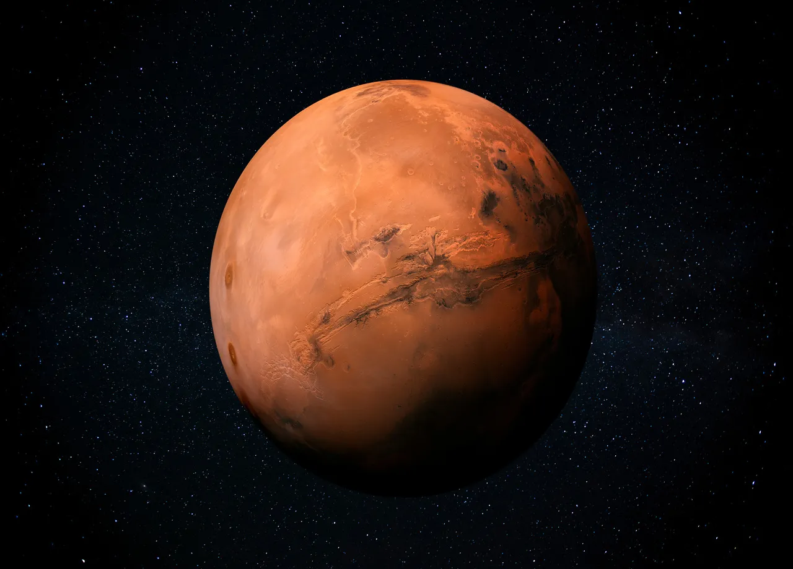

C'est l'histoire d' un extra-terrestre humanoide qui cherche son ami de planète en planète. Il lui arrivera des mésaventures.
Notre personnages à commencé ses recherches sur Mars mais malheureusement ce n'est pas sur cette planète qu'il réussi à le trouver. Il part alors autre sur une nouvel planète.